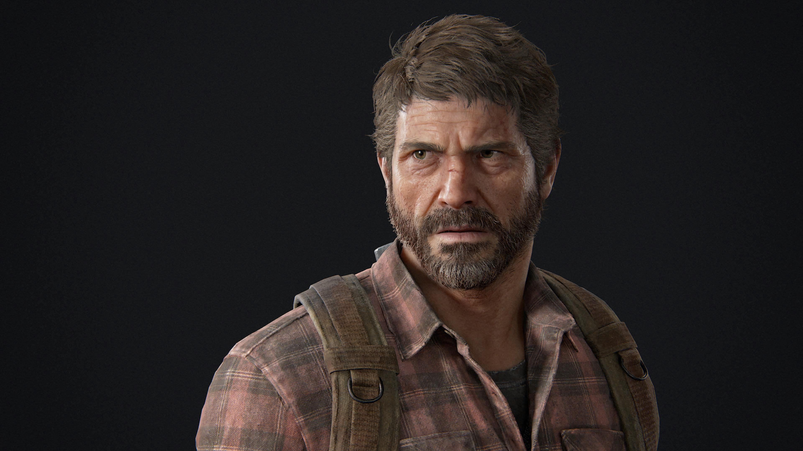

JOEL MILLER
Joel, el protagonista de "The Last of Us", es un personaje complejo y cautivador que se ha convertido en uno de los iconos más memorables de los videojuegos. Interpretado magistralmente por Troy Baker, Joel es un hombre maduro y endurecido por el dolor y la pérdida. Antes del brote de la pandemia, Joel era un padre cariñoso y un hombre común. Sin embargo, tras la propagación del cordyceps, un hongo mortal que convierte a los seres humanos en criaturas salvajes e infectadas, su vida cambia drásticamente. Joel se encuentra en un mundo despiadado donde la supervivencia es la máxima prioridad. Joel se convierte en un superviviente astuto y pragmático, dispuesto a hacer cualquier cosa para mantenerse vivo. Se ha adaptado a este nuevo mundo hostil y ha aprendido a confiar solo en sí mismo. Su enfoque es pragmático y a menudo se muestra desconfiado de los demás, creando una coraza emocional para protegerse del dolor y las pérdidas pasadas. Sin embargo, todo cambia cuando Joel se encuentra con Ellie, una adolescente valiente y misteriosa que parece tener la clave para encontrar una cura. A medida que su vínculo se fortalece a lo largo del juego, Joel comienza a abrirse emocionalmente y se convierte en una figura paternal para Ellie. Su relación se convierte en el núcleo emocional del juego, y la forma en que Joel la protege y se preocupa por ella se convierte en uno de los aspectos más conmovedores de la historia.
